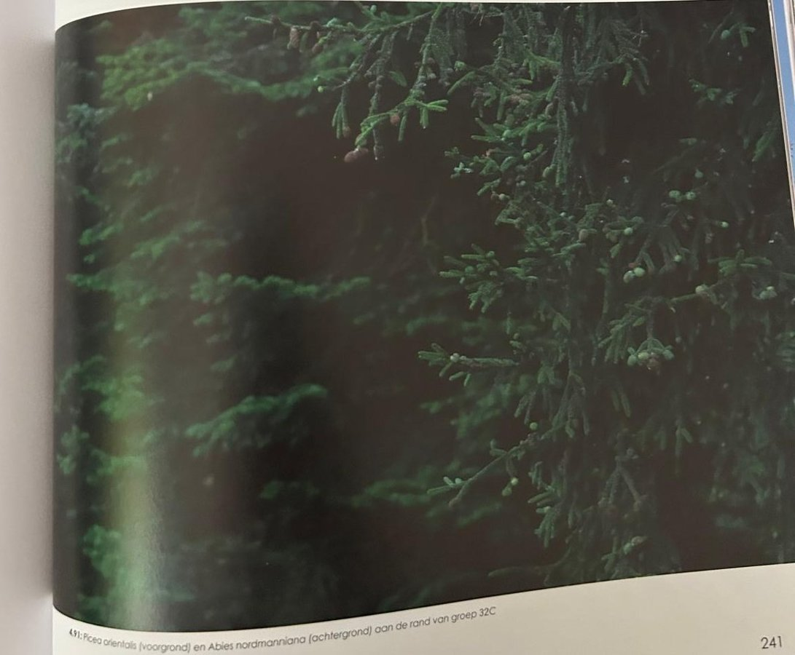
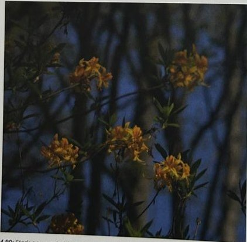
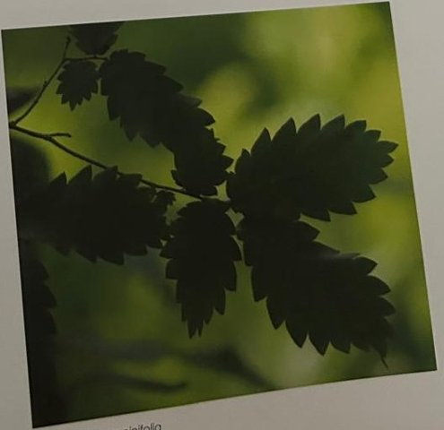

Groepen › Oude Wereld
32. Georgië, Kaukasus

Het Kaukasusgebergte tussen de Zwarte en de Kaspische Zee kent verscheidene klimaatzones en is rijk aan plantensoorten, waarvan ongeveer een vierde endemisch is. Het ligt op een kruispunt tussen continenten en vormde tijdens de ijstijden een toevluchtsoord voor plantengeslachten die uit Europa door de koude verjaagd zijn. Een voorbeeld daarvan is de Kaukasiche zelkova,, die in Groep 32 te vinden is. Laaglanden zijn begroeid met Kaukasische els, Colchische els, Kaukasische Vleugelnoot. In heuvellanden groeien eikenbossen met diverse soorten die in de Groep 32 (nog) niet vertegenwoordigd zijn, de ondergroei is vaak heel anders dan in West-Europa met groenblijvende soorten van Buxus en Rododendron. West- en Centraal-Europese soorten (bv Gewone haagbeuk, Elsbes, Meelbes) kunnen voorkomen naast oosterse, Aziatische soorten (bv Oosterse haagbeuk, Tataarse esdoorn). Het grootste oppervlak in de arboretumgroep wordt ingenomen door de Nordmann zilverspar en de Kaukasische spar, die de hogere zones in de Kaukasus domineren. De Kaukasische spar onderscheidt zich van andere sparren door zijn zeer korte naaldjes.
Uit het boek
4,24 ha · 33 soorten · 836 bomen · weerstation Mazeri
- Een van de mooiste groepen, aan de weide. Hoogtezones van eiken en vleugelnoot (32A) over beuk, elsbes en pontische azalea (32B) tot Nordmannspar en Kaukasische spar (32C).
- De zelkova is een levend fossiel; de nectar van de rododendrons is giftig ("gekke honing").



Bron: Geografisch Arboretum Tervuren. Een wereldreis rond bomen (2020), p. 238 en volgende.
Deelgroepen
- 32 – Georgië
Soorten in deze groep (34)
- Picea orientalisKaukasische spar · 371 bomen
- Abies nordmannianaKaukasische zilverspar · 282 bomen
- Pinus sylvestrisGrove den · 27 bomen
- Fagus orientalisOosterse beuk · 19 bomen
- Sorbus torminalisElsbes · 17 bomen
- Buxus sempervirensGewone buxus · 12 bomen
- Fraxinus excelsiorGewone es · 12 bomen
- Acer heldreichiiBalkanesdoorn · 10 bomen
- Aesculus hippocastanumWitte paardenkastanje · 10 bomen
- Acer cappadocicumCappodicische esdoorn · 9 bomen
- Pterocarya fraxinifoliaKaukasische vleugelnoot · 8 bomen
- Rhododendron luteumPontische azalea · 8 bomen
- Acer pseudoplatanusGewone esdoorn · 6 bomen
- Alnus cordataHartbladige els · 6 bomen
- Alnus subcordataKaukasische els · 5 bomen
- Fagus sylvaticaGewone beuk · 5 bomen
- Quercus roburZomereik · 5 bomen
- Castanea sativaTamme kastanje · 4 bomen
- Quercus castaneifoliaKastanjebladeik · 3 bomen
- Rhododendron ponticumPontische rododendron · 3 bomen
- Acer platanoidesNoorse esdoorn · 2 bomen
- Tilia speciesLinde · 2 bomen
- Acer heldreichii subsp. trautvetteri1 boom
- Acer tataricumTataarse esdoorn · 1 boom
- Alnus incanaWitte els · 1 boom
- Betula pendulaRuwe berk · 1 boom
- Carpinus betulusGewone haagbeuk · 1 boom
- Crataegus species1 boom
- Frangula alnusSporkenhout · 1 boom
- Prunus avium subsp. aviumZoete kers · 1 boom
- Quercus frainettoHongaarse eik · 1 boom
- Sorbus ariaMeelbes · 1 boom
- Staphylea colchicaKaukasische pimpernoot · 1 boom
- Ulmus laevisFladderiep · 1 boom
Tekst en foto: arboretum-tervuren.be (Koninklijke Schenking), met toestemming gebruikt.